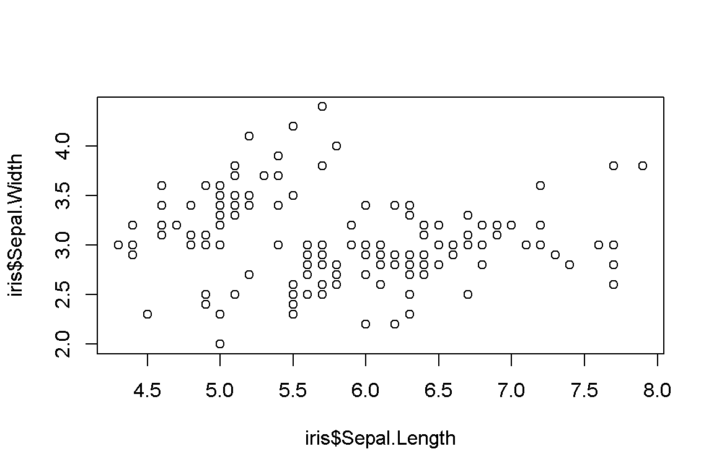

print("Hello, World!")[1] "Hello, World!"PSYC 2020-A01 / PSYC 6022-A01 | 2025-08-22 | Basic R
Hi! I’m Jessica Helmer. I’m a second-year PhD student in Quantitative Psychology.
My research focuses on the measurement and modeling of decision-making processes.
○ Or by appointment</div>:::


::::
I am available as a resource! Please feel free to reach out / email anytime if you need help, have questions about the lab, or have any suggestions or feedback for the class.
I encourage helping each other / collaboration during the lab! While working on assignments, I will try to answer everyone’s questions as soon as I can. but if someone near you is confused and you can help, go for it!
Students are expected to attend and participate in all scheduled labs.
We will have a lab lecture and assignment each week (barring institute holidays).
Students are expected to work on the activity during the scheduled lab time.
Lab assignments are due on Canvas at 11:59pm the same day they are distributed.
We will not be able to accept late lab assignments!
Assignment distributed after lecture (with plenty of time to complete!)
Always offer a few words of explanation for questions in the assignment.
○ Output alone will not get full credit.
Please submit both the knitted (.html) and the RMarkdown (.rmd) file.
○ Without your R code, we will not be able to give partial credit if the result is incorrect.
Always provide R output for every analysis carried out.
○ If the assignment asks you to make a plot, include that plot in your submission (not just the code).
Graded 0–100, equally weighted to compose 20% of your PSYC 2020 / PSYC 6022 grade
AI can be a very helpful tool for learning coding! Feel free to use it to clarify concepts, troubleshoot code, or syntax explanations
However, for the assignments, your code needs to be your own.
It is important to practice and gain experiencing coding independently.
All free, open source materials for learning R
Open source coding language, primarily used for data analysis and data science

Coding (per the IDEAR book):
“Giving very specific instructions to a very stupid machine.”
print("Hello, World!")[1] "Hello, World!"Because R is a programming language, you can make your own codes / functions as commands
R has many “packages” for statistical functions
R is open source: you can see the exact code that underlies the functions you use
○ And if you’d like, you can modify it
An interface for R
Helps keep R files organize
Helps “knit” code, output, and text to create reports
We need to download two things:
R is the language, RStudio is an Interactive Development Environment (IDE)
We will use R through RStudio
Files, Plots, Packages
Environment, History
Console
2 + 4[1] 62 + 4 / 4[1] 3PEMDAS!
2 ^ 3[1] 88 %% 3[1] 2c(2, 4, 6)[1] 2 4 6c(1, "hello!", "Georgia Tech")[1] "1" "hello!" "Georgia Tech"c() function
Matrix algebra!
c(1, 2, 3) / 3[1] 0.3333333 0.6666667 1.0000000c(1, 2, 3) / c(1, 2, 3)[1] 1 1 1c(1, 2, 3)[1] 1 2 3c(1, "hello!", "Georgia Tech")[1] "1" "hello!" "Georgia Tech"Quotes around 1 in the first vector, not in the second
Vectors can only hold one type of data!
Numeric
Character
c(1, 2, 3) / 3[1] 0.3333333 0.6666667 1.0000000c(1, "hello!", "Georgia Tech") / 3Error in c(1, "hello!", "Georgia Tech")/3: non-numeric argument to binary operatorError because we cannot divide characters
TRUE[1] TRUEc(1, "hello!", TRUE)[1] "1" "hello!" "TRUE" c(TRUE, FALSE)[1] TRUE FALSE6 > 4[1] TRUE12 / 2 < 6[1] FALSEThe <, >, and <= symbols are logical operators
Logical data handled like binary numeric data
TRUE == 1[1] TRUEFALSE + 3[1] 3TRUE and FALSE can be abbreviated as T and F
TRUE == T[1] TRUEFALSE == F[1] TRUEHarder to tell apart, so be careful!
2 + 2[1] 42 + 2 / 2[1] 32 + 2 / 2 ^ 2[1] 2.5c("hello!", 2) / 2Error in c("hello!", 2)/2: non-numeric argument to binary operatorIn R, we can assign objects (including functions) to some variable with the assignment operator <-
# assign variable a the value 1
a <- 1
# print a
a[1] 1a <- c(1, 2, 3)
a[1] 1 2 3a <- c("Hello, world!")
a[1] "Hello, world!"Every time we reassign a value to a, it holds that new value
Overwrites previous value!
Overwriting can mess stuff up!

○ Quantitative
○ Values describing a measurable quantity as a number
○ “How many” or “how much”
○ Distinguish distinct elements or entities
○ Name, gender, ethnicity…
○ Variable that represents categories without any inherent order.
○ E.g., types of fruit (“apple,”“orange,” “banana”).
○ Variable that represents categories with a meaningful order.
○ For example, levels of satisfaction (“very unsatisfied,” “unsatisfied,” “neutral,” “satisfied,” “very satisfied”)
○ Variable that can only take specific values.
○ Think of things you can count, like the number of people in a room or the number of apples in a basket.
○ Variable that can take any value within a range.
○ Think of things you can measure, like height or time.
Table of data
Can make by hand with the data.frame() function:
data.frame(x = c(1, 2, 3),
y = c("a", "b", "c"),
z = c(TRUE, FALSE, TRUE)) x y z
1 1 a TRUE
2 2 b FALSE
3 3 c TRUEShift+Enter to go to new line on Console
Most of the time, we import data (and don’t manually type it in)
In console, can press up arrow to reload last line of code
If you already have vector objects saved, you don’t have to type them in again
a <- c(1, 2, 3)
b <- c(2, 3, 4)
c <- c(3, 4, 5)data.frame(a = a,
b = b,
c = c) a b c
1 1 2 3
2 2 3 4
3 3 4 5data.frame(a, b, c) a b c
1 1 2 3
2 2 3 4
3 3 4 5data.frame(A = a, b, c) A b c
1 1 2 3
2 2 3 4
3 3 4 5RStudio’s way of helping organizing files, scripts, etc.
I strongly recommend this!!
○ File > New Project
○ If you don’t already have a folder associated with this class, “New Directory”
○ If you do, “Existing Directory”
All R Scripts under the same project share a working directory
○ Location of files
getwd() tells us the location of our working directory
setwd("C:/Users/Desktop/R Example") sets the working directory
Or, here::here() lets us do relative directories (my favorite!)
○ Just use the command at the top of the file to see where your directory is
R script files end with .R
File > New File > R Script
Ctrl + Shift + N
A way of typesetting R code into a document
End in .rmd
File > New File > RMarkdown…
Input Title, Author, Date
How we will complete assignments

How to insert an RMarkdown chunk in RStudio
○ Type ```{r}.
○ Add your R code.
○ Close the chunk with ```.
○ Use the shortcut Ctrl + Alt + I (Windows) or Cmd + Option + I.

How to run RMarkdown code chunks in RStudio
○ Use the shortcut Ctrl + Enter (Windows) or Ctrl + Return (Mac)

Can also select a variable and run it to see its output (helpful!)
Important to ensure that your code isn’t unintentionally relying on hidden objects in the environement
○ E.g., you created an object, deleted the line to create it, but R still sees it there
When you try to knit your file, it will clear, restart, and run all code
○ In the previous situation, your code would error
Clearing your environment and restarting R frequently helps you avoid this

○ Session > Restart R.
○ Use the shortcut Ctrl + Shift + F10 (Windows) or Cmd + Shift + F10.
Run code often to ensure it’s working
Restart R frequently
Knitting will combine text, syntax, results, and output into a Word, PDF, or HTML file

iris dataset has measurements of 150 flowers, preloaded from R
head() function shows first few rows of a dataframe
head(iris) Sepal.Length Sepal.Width Petal.Length Petal.Width Species
1 5.1 3.5 1.4 0.2 setosa
2 4.9 3.0 1.4 0.2 setosa
3 4.7 3.2 1.3 0.2 setosa
4 4.6 3.1 1.5 0.2 setosa
5 5.0 3.6 1.4 0.2 setosa
6 5.4 3.9 1.7 0.4 setosatail() shows last few rows
Can specify how many rows you want
tail(iris, n = 3) Sepal.Length Sepal.Width Petal.Length Petal.Width Species
148 6.5 3.0 5.2 2.0 virginica
149 6.2 3.4 5.4 2.3 virginica
150 5.9 3.0 5.1 1.8 virginicaPress Ctrl + S frequently to save your work!!
Can also press the save icon in the top left

Open a new script or RMarkdown file
Check (and set if needed) your working directory
Load any packages you’ll be working with
Write your code
Knit and save your file
Let’s make our first plot!
$ operator references columns within a dataframe
plot(iris$Sepal.Length, iris$Sepal.Width)
Do we like this plot?
Objectives:
Do some basic R!
Get familiar with RMarkdown